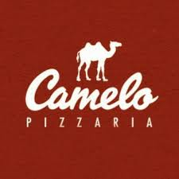
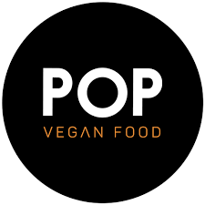
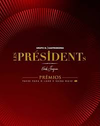

Contatos
Camelo Pizza

Sobre:
A Pizzaria Camelo é o local ideal para realização de eventos sociais e corporativos.
Com 65 anos de história, a pizzaria é renomada por sua inigualável qualidade de pizza
e pratos, tornando-a uma opção frequentemente escolhida para comemorações, festas,
casamentos e reuniões de negócios.
A equipe da Pizzaria Camelo se esforça para oferecer aos seus clientes uma experiência
memorável. Com um ambiente acolhedor e uma ampla variedade de opções de cardápio,
incluindo pizzas saborosas e outros pratos de destaque, eles garantem que cada evento
seja único e satisfatório. Além disso, o atendimento é prestado por profissionais altamente
capacitados, dedicados a planejar e executar cada detalhe de forma minuciosa.
Local: R. Pamplona, 1873 - Jardim Paulista, São Paulo - SP, 01405-002
Pop Vegan Food

Sobre:
O Pop Vegan Food nasceu da missão de popularizar a comida vegana. Nós três – Guilherme,
Mônica e Carol – somamos 54 anos de veganismo e já éramos voluntários e ativistas de
direitos dos animais muito antes de sermos empresários. Em 2014 surgiu a oportunidade
de empreendermos no ramo da alimentação e, desde então, nos dedicamos a oferecer a
alimentação vegana mais privada e acessível possível
Local:R. Fernando de Albuquerque, 142/144 - Consolação, São Paulo - SP, 01309-030
Les Présidents

Características do prato
Quando Erick Jacquin não está no restaurante, e isso acontece com relativa frequência,
a equipe afinada montada pelo cozinheiro francês e uma das estrelas do reality MasterChef,
na Band, mantém a qualidade inalterada. No salão de paredes vermelhas e revestidas com
fotos do próprio chef e de presidentes franceses, além de uma infinidade de outros
penduricalhos, afunde-se num dos sofás com estampa de onça. Um passeio pelo cardápio,
menos mutante que no passado, aponta para uma sequência de pratos tradicionais preparados
com rigor técnico, mais leveza e de uma forma moderna.
Local: R. da Consolação, 3527 - Cerqueira César, São Paulo - SP, 01416-001